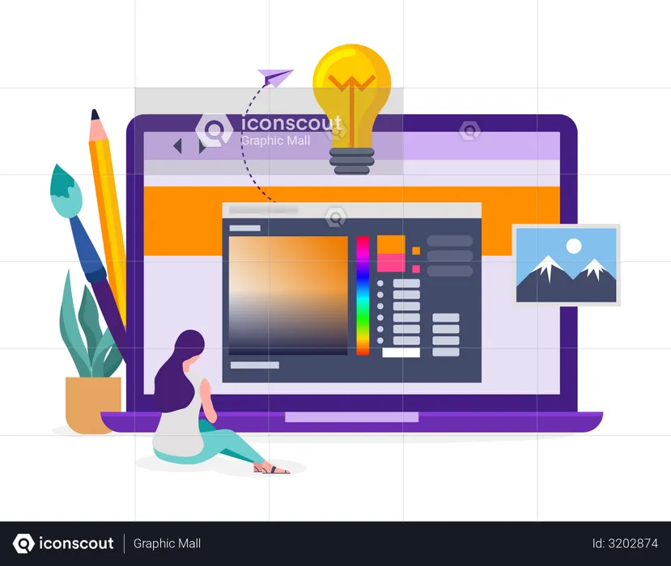

Services
Web Design
Crafting visually stunning, user-centered web designs that blend creativity with functionality to deliver exceptional digital experiences.

Web Development
Web development is the art and science of building websites and applications, merging creativity with technology. It covers everything from front-end design to back-end functionality, ensuring seamless user experiences.

Graphic Design
Designing intuitive and engaging user experiences that blend creativity with functionality, turning interactions into delightful journeys.
